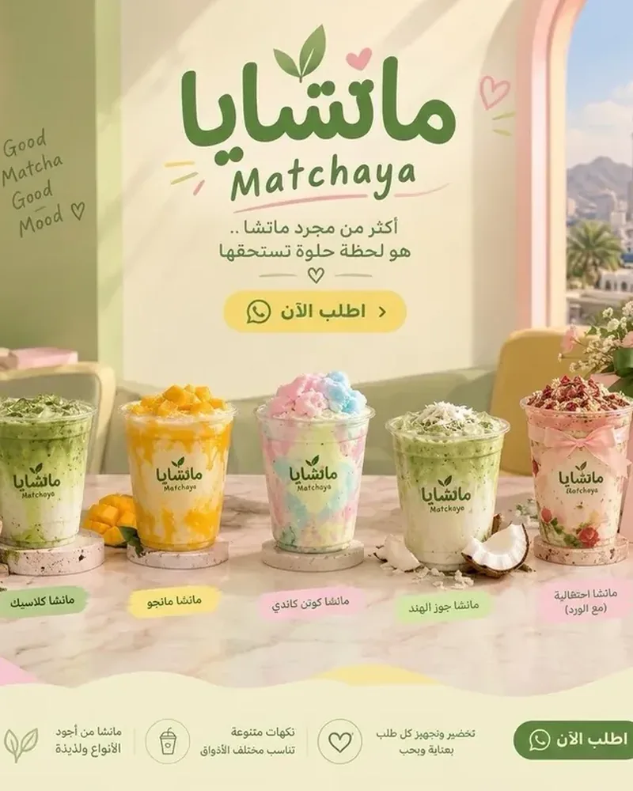
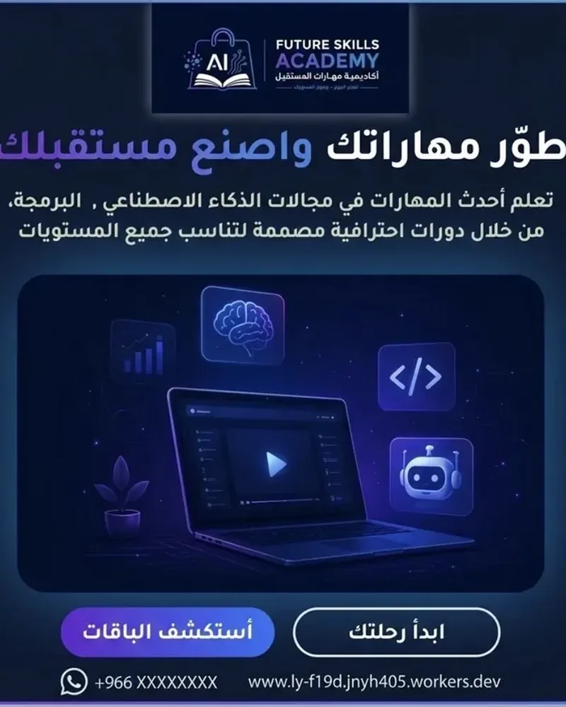
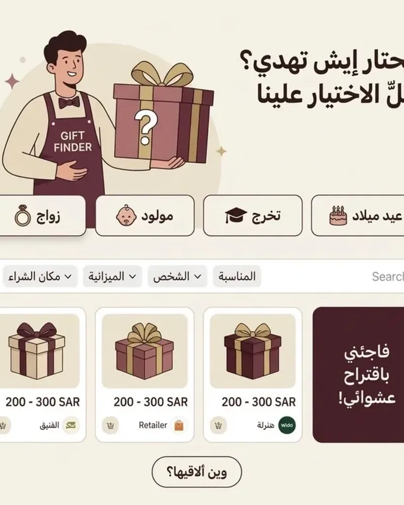
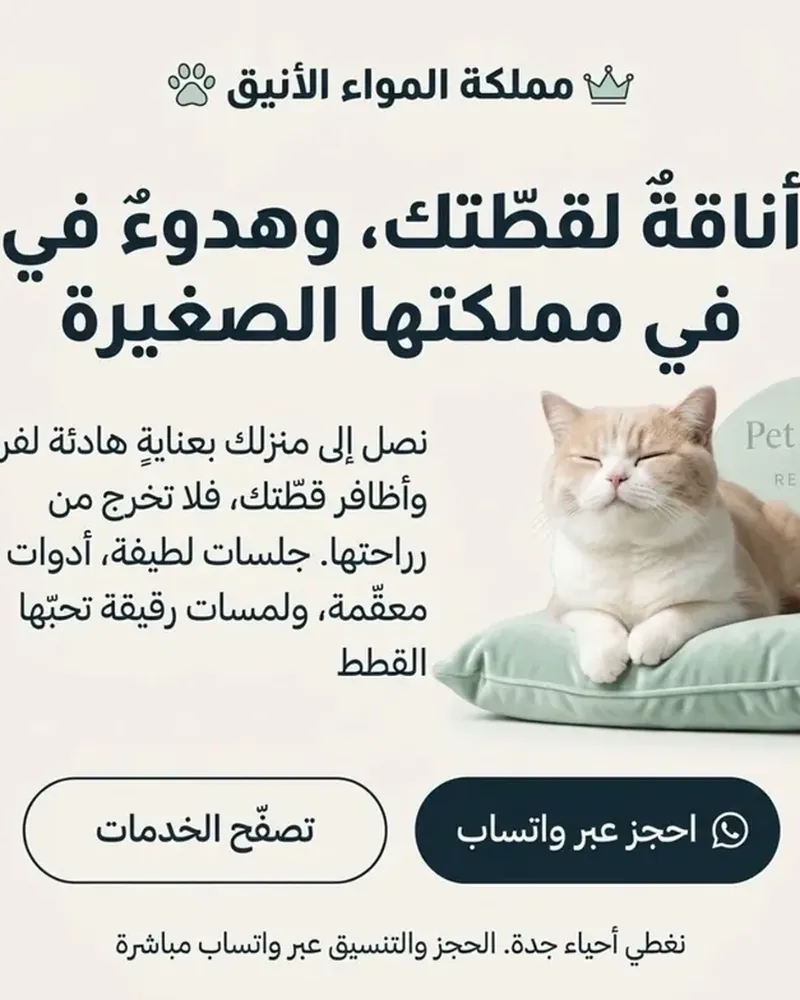
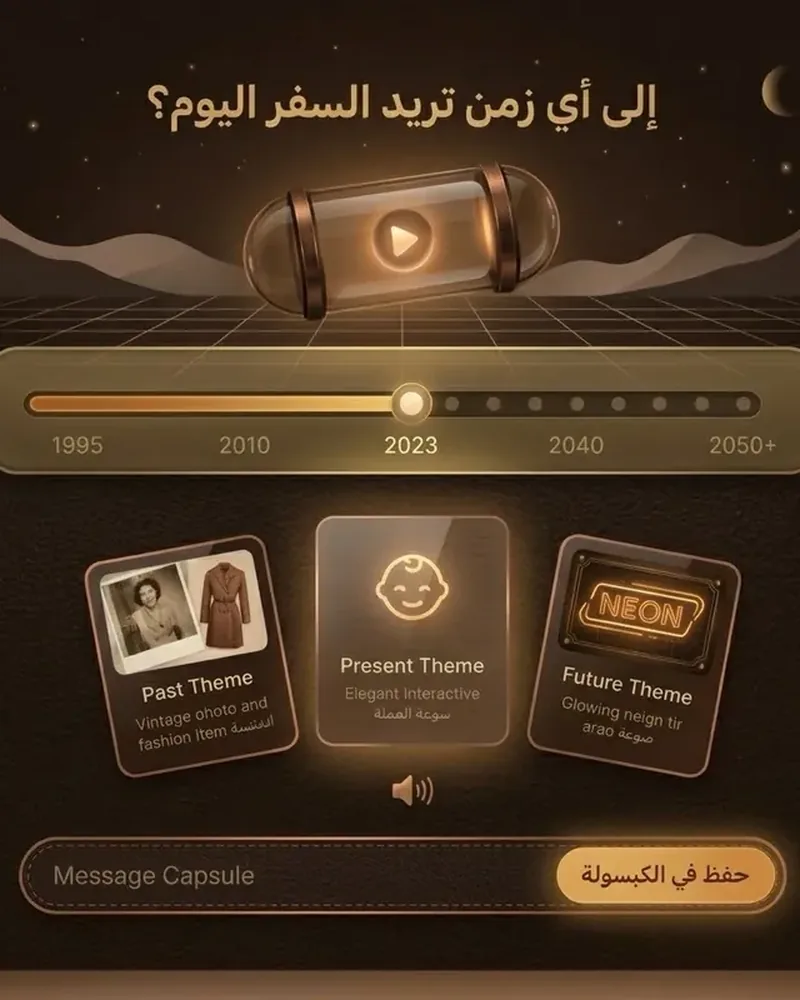
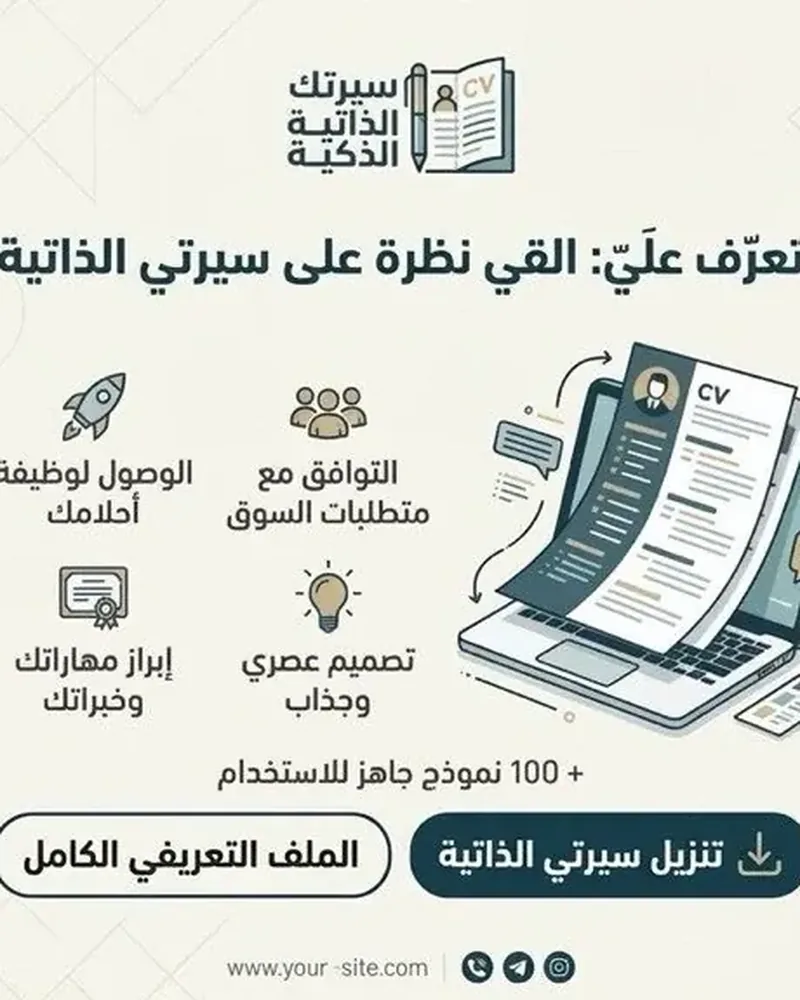

01ماتشايا
تطوير ويب · تجربة مستخدمموقع تجربة لمقهى ماتشا يعرض القائمة والنكهات وشهادات العملاء. يتيح الطلب مباشرة عبر واتساب بتصميم دافئ وهوية بصرية واضحة.
عرض المشروعشبكة من ستة أعمال تجمع التصميم، والتطوير، ومحتوى عربي واضح. كل بطاقة تتضمن وصفًا مختصرًا ورابطًا مباشرًا للمشروع.

01موقع تجربة لمقهى ماتشا يعرض القائمة والنكهات وشهادات العملاء. يتيح الطلب مباشرة عبر واتساب بتصميم دافئ وهوية بصرية واضحة.
عرض المشروع
02أكاديمية تعليمية تقدم دورات في الذكاء الاصطناعي والبرمجة والتقنية لمختلف المستويات. تشمل باقات للطلاب والموظفين والمطورين مع مدربين متخصصين.
عرض المشروع
03أداة ذكية لاختيار الهدية حسب المناسبة والشخص والميزانية ومكان الشراء. تتضمن فلاتر لحظية وعجلة عشوائية لاقتراحات غير متوقعة.
عرض المشروع
04موقع لصالون متنقل للعناية بالقطط في جدة. يقدم قص الشعر، تشذيب الأظافر، وجلسات استرخاء مع حجز موعد عبر واتساب.
عرض المشروع
05تجربة تفاعلية للسفر عبر الحقب الزمنية مع شريط اختيار الأعوام. تتغير الواجهة والألوان والأصوات حسب الحقبة وتتيح حفظ رسائل في كبسولة.
عرض المشروع
06بطاقة رقمية مختصرة تجمع المسمى والخبرات ومعلومات التواصل في تصميم واضح. تسهل مشاركة الهوية المهنية بأسلوب أنيق وسريع.
عرض المشروع